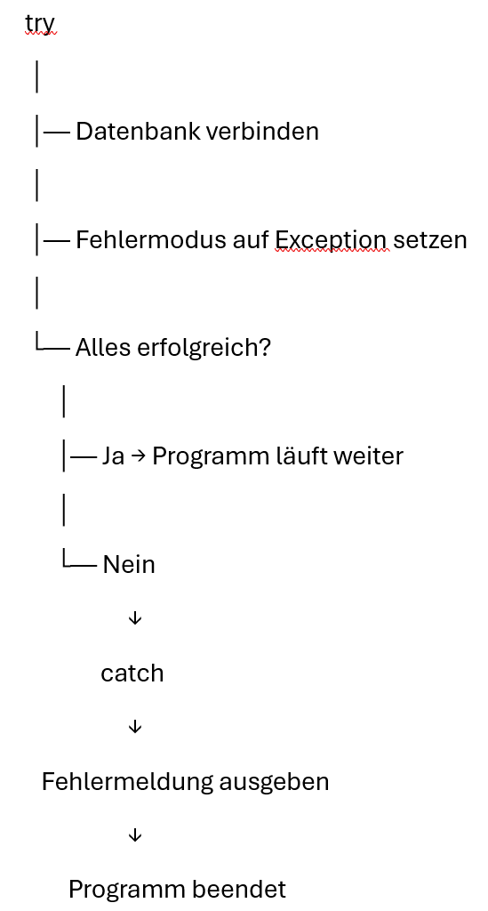

Themenfeld aus dem Curriculum: Datenbanken nutzen mit PHP
Anforderungen aus dem Themenfeld mit MySQLi pragmatisch umgesetzt:
zur Aufgabe
Anforderungen aus dem Themenfeld mit PDO pragmatisch umgesetzt:

Anforderungen aus dem Themenfeld mit SOAP-Server und PDO pragmatisch umgesetzt:
zur Aufgabe
... und zum Schluss noch die einfache Variante mit einer REST-Api:
zur Aufgabe